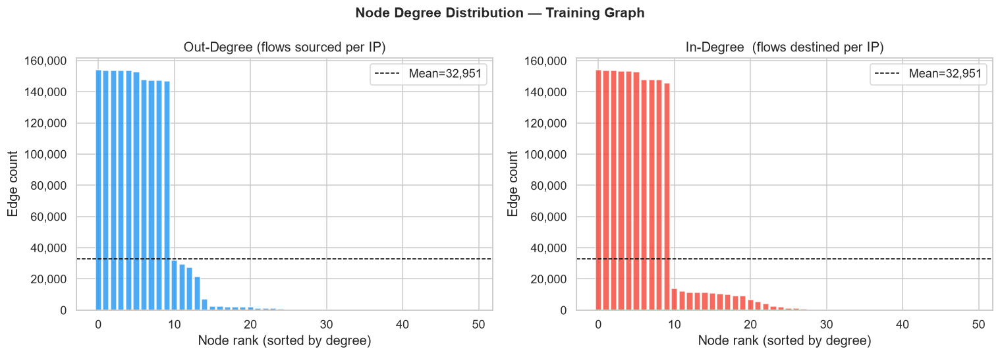
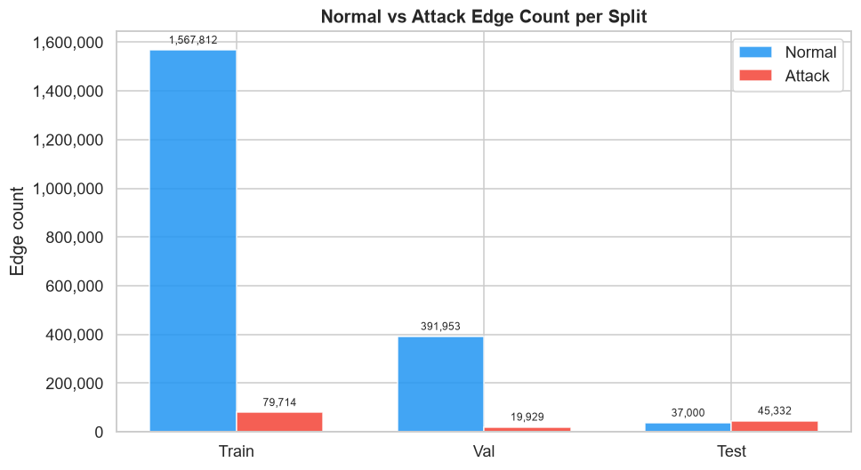

Graph Construction
Transforming the tabular network flow data into a heterogeneous IP-to-IP directed graph for PyTorch Geometric. Each unique IP address becomes a node; each network flow becomes a directed edge. The task is edge classification — predict whether each flow is normal or an attack.
✓ Complete🌐 Graph at a Glance
🏗️ Graph Design
Nodes — IP Addresses
Every unique IP address in the training set is mapped to a node index 0–49. Any IP not seen in training is mapped to a single shared UNK node (index 50). This handles unseen IPs at inference time without graph structure changes.
Node features (11 dimensions) are computed per IP from the training set: out-degree, in-degree, out-bytes (mean), in-bytes (mean), attack ratio, protocol entropy, service entropy, mean TTL (src), mean TTL (dst), mean duration, and connection rate. These aggregate the historical traffic profile of each endpoint.
Edges — Network Flows
Each network flow record becomes a directed edge from srcip node to dstip
node. Multi-edges are preserved (same IP pair can have many flows).
Edge features (37 dimensions) are exactly the 37 preprocessed flow features from Phase 2 — all normalised and encoded. This is the primary signal used for classification. The edge label is the 10-class attack category (or Normal), reduced to binary for the binary task.
📊 Per-Split Graph Statistics
| Metric | Train | Validation | Test |
|---|---|---|---|
| Number of nodes | 51 | 51 | 51 |
| Number of edges (flows) | 1,647,526 | 411,882 | 82,332 |
| Unique src→dst pairs | 311 | 286 | 1 |
| Graph density (edges/nodes²) | 646.09 | 161.52 | 32.29 |
| Weakly connected components | 6 | 8 | 51 |
| Mean out-degree | 32,304 | 8,076 | 1,614 |
| Max out-degree | 154,082 | 38,804 | 82,332 |
| Attack edge ratio | 4.84% | 4.84% | 55.06% |
| Normal edges | 1,567,812 | 391,953 | 37,015 |
| Attack edges | 79,714 | 19,929 | 45,317 |
📈 Graph Structure Visualisations


❓ The UNK Node Problem
srcip=UNK or dstip=UNK.
| Scenario | Train / Val | Test |
|---|---|---|
| Node neighbourhood available? | Yes — 50 known IPs, 311 unique pairs | No — all flows → UNK node |
| GNN can aggregate neighbours? | Yes — meaningful IP history | UNK has no meaningful embedding |
| Edge features still available? | Yes | Yes |
| Model type advantage | GNNs ≈ baselines | Baselines >> GNNs (edge features only) |
This is an inductive GNN problem — the model must generalise to nodes not seen at training time. The current architecture (full-batch transductive training) does not handle this gracefully. Future work should explore inductive methods such as GraphSAINT, SEAL, or edge-only models that bypass node embeddings entirely for test flows.
💾 Saved PyG Data Objects
| File | Contents |
|---|---|
outputs/graph/graph_data_train.pt | PyG Data: 51 nodes, 1,647,526 edges, x (11), edge_attr (37), y (10-class) |
outputs/graph/graph_data_val.pt | PyG Data: 51 nodes, 411,882 edges, x (11), edge_attr (37), y (10-class) |
outputs/graph/graph_data_test.pt | PyG Data: 51 nodes, 82,332 edges, x (11), edge_attr (37), y (10-class) |
outputs/graph/graph_stats.json | Full graph statistics (density, degree, WCC, attack ratio per split) |
🔑 Phase 3 — Key Findings
- Tiny node set (51 IPs) but massive edge set (1.6M train edges) — this is an edge-heavy, node-sparse graph, unusual for GNNs typically designed for node-sparse, edge-dense problems in the opposite ratio.
- Power-law degree distribution — a few gateway/server IPs dominate with 100k+ edges. GNN pooling will be dominated by these high-degree nodes.
- Test graph is structurally disconnected — 51 weakly connected components, 1 unique pair, all connecting to UNK. This is the root cause of GNN test failure.
- Node features aggregate IP history from training only — the UNK node's features are the mean of all known-IP features, which is a weak approximation for genuinely novel endpoints.
- All 37 edge features preserved as PyG
edge_attr— classical baselines and GNNs use the same information, ensuring a fair comparison.